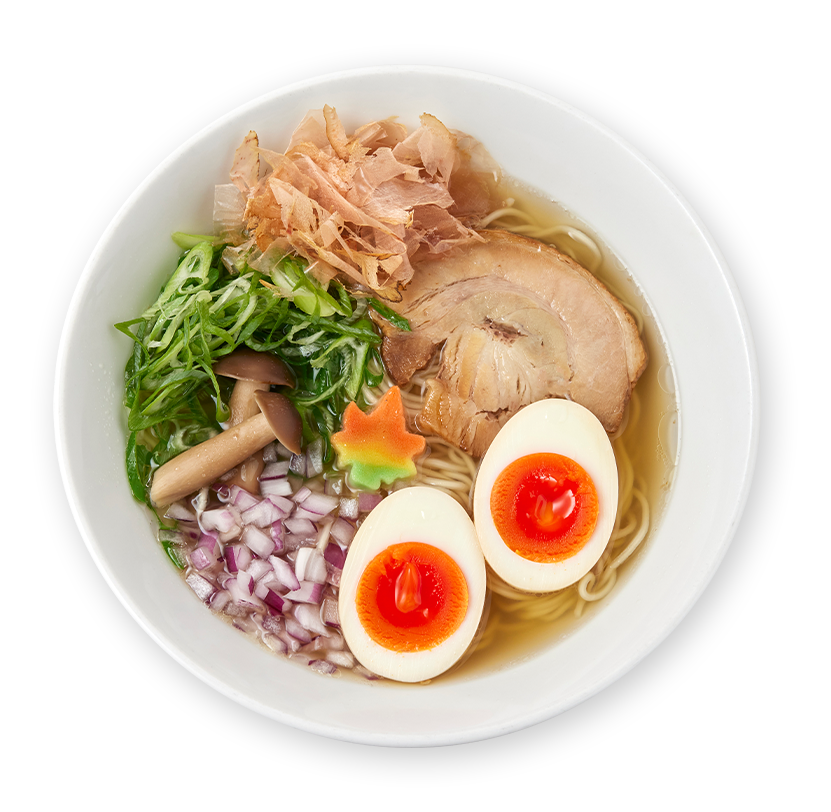
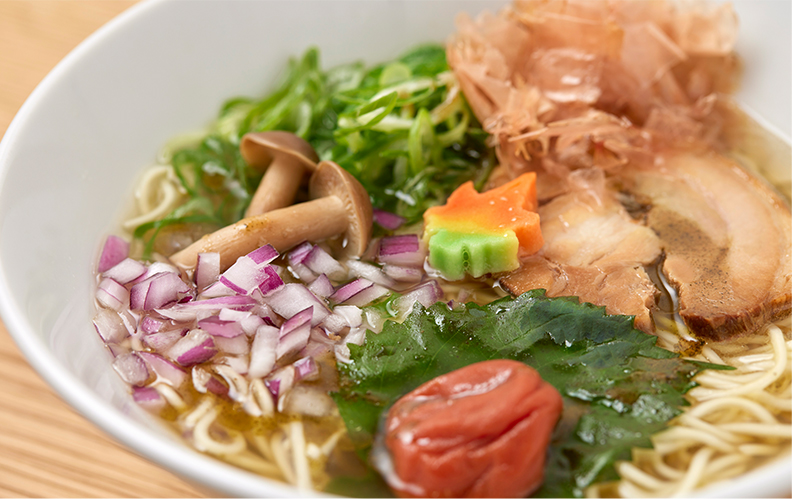

h1が入ります。h1が入ります。h1が入ります。h1が入ります。

お出汁が染みる
優しいらーめん
「京阿月つるりん」は
京らーめんと甘味を楽しめるお店として、
京都駅前地下街ポルタで
産声を上げました。
2022年に烏丸御池・六角通へと移転し、
新店舗となった現在も、
多くのお客様にご愛顧いただいております。
人気白だしらーめんを筆頭に、
幅広く取り揃えている京らーめんは、
どれもお出汁を効かせた
あっさり優しい味わいが特徴。
女性の方やお子様でも
美味しく召し上がれる一杯です。
九条ねぎや丹波しめじ、
半熟の濃紅たまごといった
京都らしいトッピングも、
京都観光に来られた方や、
地元のお客様に喜ばれております。
そんなつるりん特製の京らーめんを、
ぜひランチやディナーで
ご堪能ください。
四十年以上
味を守り昇華させる
スープが味の決め手
「京阿月つるりん」が京都駅地下街で誕生してから、40年以上。新天地へと移った今でも、京らーめんは当店の要となるメニューです。
とはいえ、お客様にもっとご満足いただけるよう、長年守り続けてきた味を更に進化させ、磨きをかけて参りました。
黄金色の透き通ったスープのベースとなるのは、鶏ガラ・生姜・野菜・昆布などから旨味を抽出したブイヨン。そこに香ばしい葱油を合わせた自家製スープに、らーめんごとに異なる厳選素材を加えて、味わいを調和させております。
定番のお品書き
白だしらーめん
京都・濃紅たまごの煮卵付き 990円
煮卵なし 880円
※価格は全て税込みです。白醤油を基本とし、いりこ、かつお、昆布の素材本来の旨味を
引き出した上品な味わいが特徴。たっぷりの九条ねぎ、出汁で
炊いた丹波しめじ、ほろっとやわらかなチャーシュー、食感が
良い紫玉ねぎなどをトッピングしております。別皿でお出しす
る本かつお節を加えると風味が一段と増しますので、お好みで
どうぞ。
ふわりと香る
本かつお節を添えて
醬油らーめん
京都・濃紅たまごの煮卵付き 990円
煮卵なし 880円
和風出汁香る醬油らーめんもおすすめです。全ての京らーめんのベースとなる自家製スープに、こだわりのブレンド醤油、ゲランドの塩、干し椎茸の旨味を効かせております。磯の風味が豊かなあおさを加えてお召し上がりください。
磯の香りが広がる

白だし梅しそらーめん
1,045円
色彩も鮮やかで、女性のお客様に人気のらーめん。南高梅の酸味と青紫蘇オイルの香りがアクセントとなった、さっぱりと楽しめる一杯です。この他、醤油ベースの「醤油梅しそらーめん1,045円」もご用意しております。
醬油野菜らーめん 935円
春夏秋冬、時季に合わせた限定らーめんも登場します。ほっと身体温まる、柚子やおろし生姜で味わう“?油野菜らーめん”や、夏の暑い時期でもさっぱりと楽しめる“冷めん”など、その時々の美味をお召し上がりください。
季節メニューは
こちらをチェック

京らーめんと一緒に
ちょっぴりお得な
セットメニュー
目でも楽しめる手巻き寿司は、京らーめんの
お供に最適。醤油玉ねぎソースで仕上げた薄
切りローストビーフ入りの和風ローストビ
ーフ、サーモンとアボカドをバジルドレッシングで和えたサラダ仕立てのサーモンアボ
カドサラダの2種類をご用意しております。
手巻き寿司
- ・和風ローストビーフ
- ・サーモンアボカドサラダ
セット 440円 / 単品 660円
気分で選べるミニ丼

1本プラス165円
2本プラス220円
3本プラス330円
京らーめんを満喫した後は、食後のデザートとして、京阿月名物の甘味はいかがでしょうか。例えば、こぼんちゃんは1本から追加することが可能。その他にもミニ和スイーツやドリンクを各種ご用意しております。美味しい甘味を味わいながら、まったりと午後のひとときを過ごしていただければ幸いです。
和スイーツ
お食事メニュー
※価格は全て税込みです。
京らーめん
- 白だしらーめん
京都・濃紅たまごの煮卵付き
煮卵なし - 990円
880円
- 醤油らーめん
京都・濃紅たまごの煮卵付き
煮卵なし - 990円
880円
- 白だし梅しそらーめん
- 1,045円
- 醤油梅しそらーめん
- 1,045円
- 白だし野菜らーめん
- 935円
- 醤油野菜らーめん
- 935円
- 【トッピング】
濃紅たまごの煮卵
九条ねぎ
コーン
焼豚（3枚）
麺大盛り - 110円
110円
110円
220円
110円
お得なセット
- 手巻き寿司
・和風ローストビーフ
・サーモンアボカドサラダ
セット
単品 - 440円
660円
- ローストビーフ丼
セット
単品 - 440円
660円
- ミニ衣笠丼
セット
単品 - 330円
550円
- ミニねぎトロ丼
セット
単品 - 440円
660円
- 白ごはん
- プラス220円
- こぼんちゃん
- 1本プラス 165円
2本プラス 220円
3本プラス 330円
- ミニスイーツ
・ぜんざい
・白玉みつまめ
・フルーツみつまめ
・わらびもち - 各プラス330円